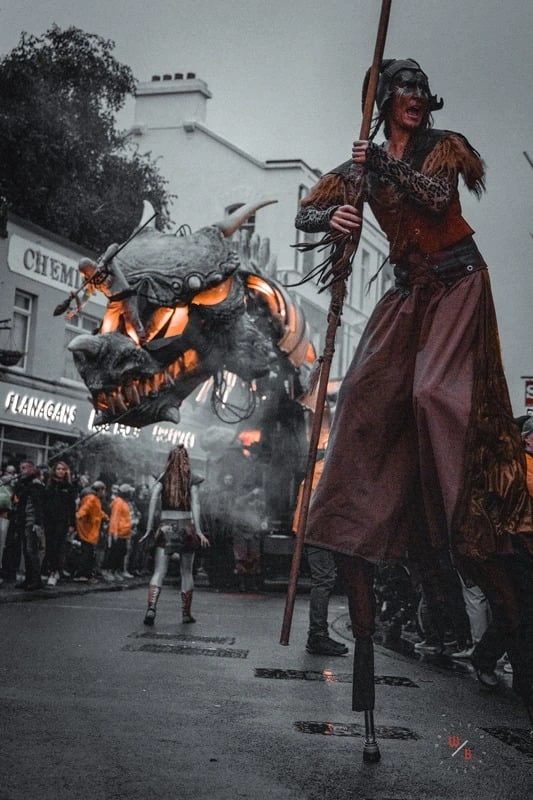
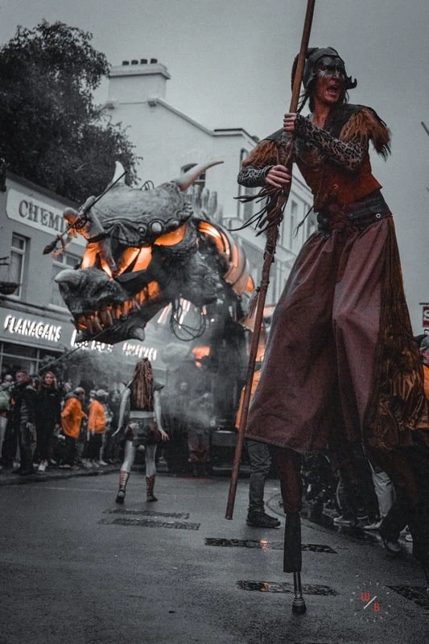

Photography captures moments in time, allowing individuals
to freeze memories and emotions. It enables people to
document significant life events, such as weddings,
birthdays, and family gatherings, preserving precious
memories for future reminiscence. Through photographs,
individuals can share their stories and experiences with
others, fostering connections and understanding.
Photography is a vital tool that enriches lives by preserving
memories, shaping cultural narratives, fostering creativity,
and connecting people across the globe. Its significance
continues to grow as technology evolves, reinforcing
photography's place as a cherished form of communication
and expression in our daily lives.
Elza Raquel (2022)

BIO
Originating from the lively streets of São Paulo, Brasil, my love about photography began with capturing the beauty of nature and architecture at churches where I learned to appreciate the details and the magic of fleeting moments. Today, my passion is photographing emotions, preserving genuine feelings in each shot. Through my lens, I strive to tell stories and create memories that touch the heart.
MY APPROACH
I strive to connect deeply with the essence of nature and the emotions it evokes. Each moment in the natural world is a fleeting, beautiful interplay of light, shadow, and color, and my goal is to transform these moments into visual stories that resonate with feelings and experiences. I believe that photography is not just about taking pictures; it’s about observing and feeling. When I venture into the great outdoors, I immerse myself in the surroundings, allowing the sights and sounds of nature to wash over me. Whether it’s the gentle rustle of leaves in the wind, the vibrant hues of a sunset, or the intricate details of a flower, I aim to capture not just the image but the very spirit of the moment. My camera becomes an extension of my emotions, allowing me to express what words often cannot. I focus on the subtle nuances that reveal feelings— like the way sunlight filters through the trees, creating a warm glow that evokes a sense of peace, or how the patterns in a stormy sky can convey tension and drama. Each photograph is intentionally composed to evoke a particular mood, inviting viewers to experience the feelings I felt in that instant.
Rachele Montarani
Before the photoshoot, I felt insecure, but afterward, I saw myself in a whole new light. The experience helped me recognize my own shine. Washington was incredibly empowering throughout the session, making it fun and uplifting. Thank you for helping me embrace my confidence!
Swann Deppe
I had an amazing experience with this photographer! He made me feel comfortable in no time, and within minutes I felt confident in front of the camera. His skill in capturing the best side of his clients is truly impressive. I was blown away by the results and the relaxed atmosphere he created. Highly recommend for a professional and enjoyable photoshoot!


 

Washington
Brunlees
Join me
jamesbrunlees@gmail.com
 +353 83 446 2393
+353 83 446 2393
Get Social